Title: Layers
Year: 2022
Material: 5x7.5 inches, Inkjet
Description: Layers is a hand bound publication that holds both English and Italian text of an excerpt from “Invisible Cities” written by Italo Calvino. The narrative of how language has many layers to fully understand is visually communicated through the cover and imagery which was generated from the concept of how graffitis are layered on each other. Illustrations are based on the graffitis you can find from a walk on Wabash Avenue, Chicago.
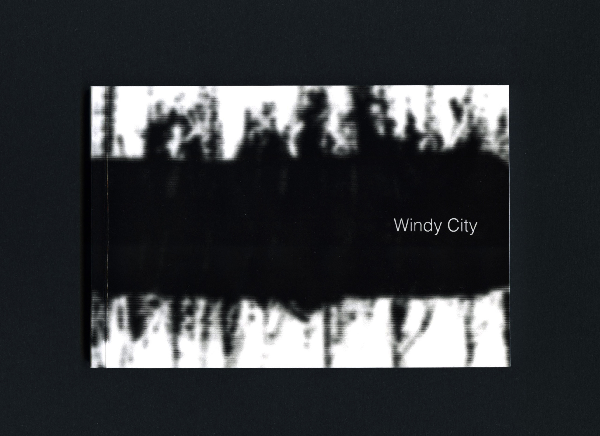
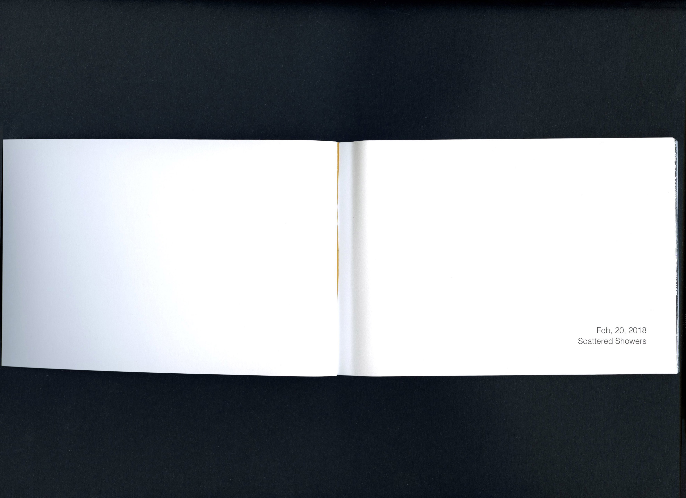
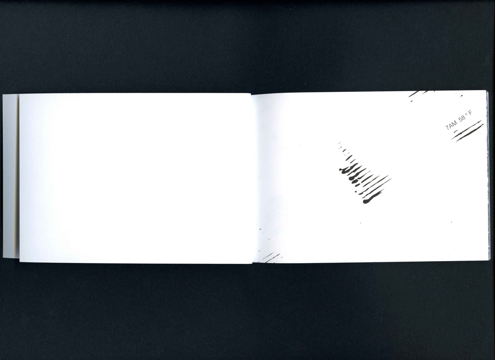
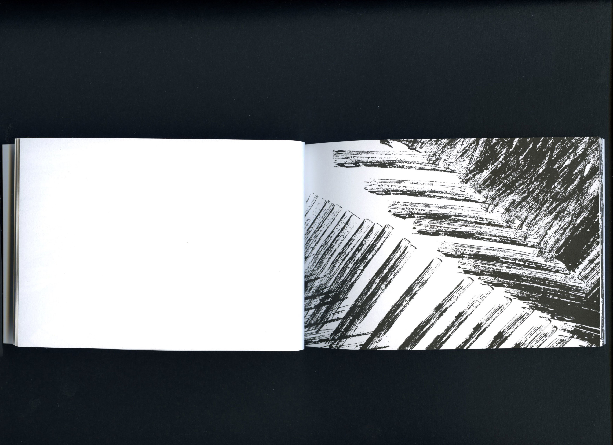
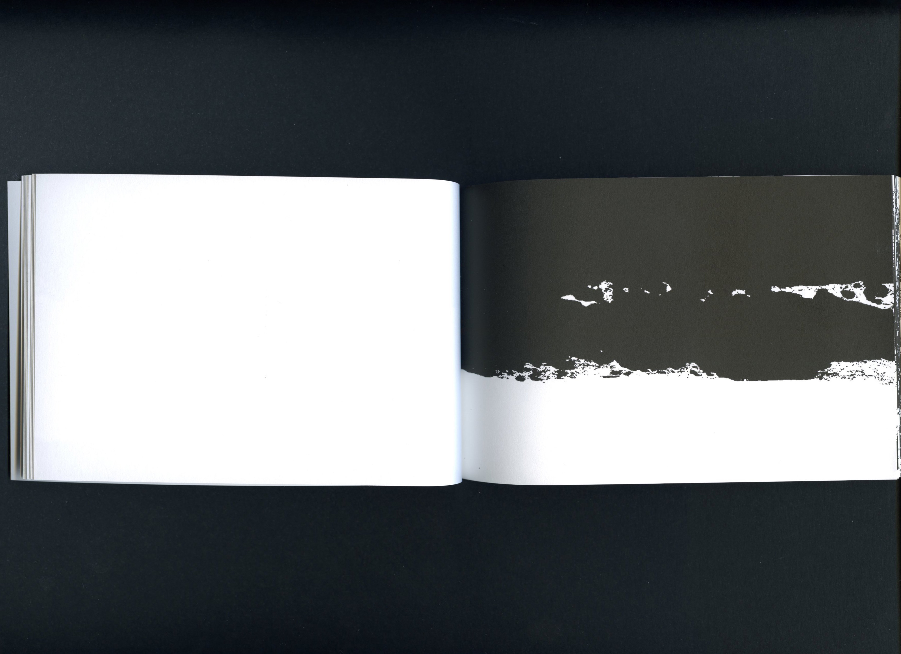
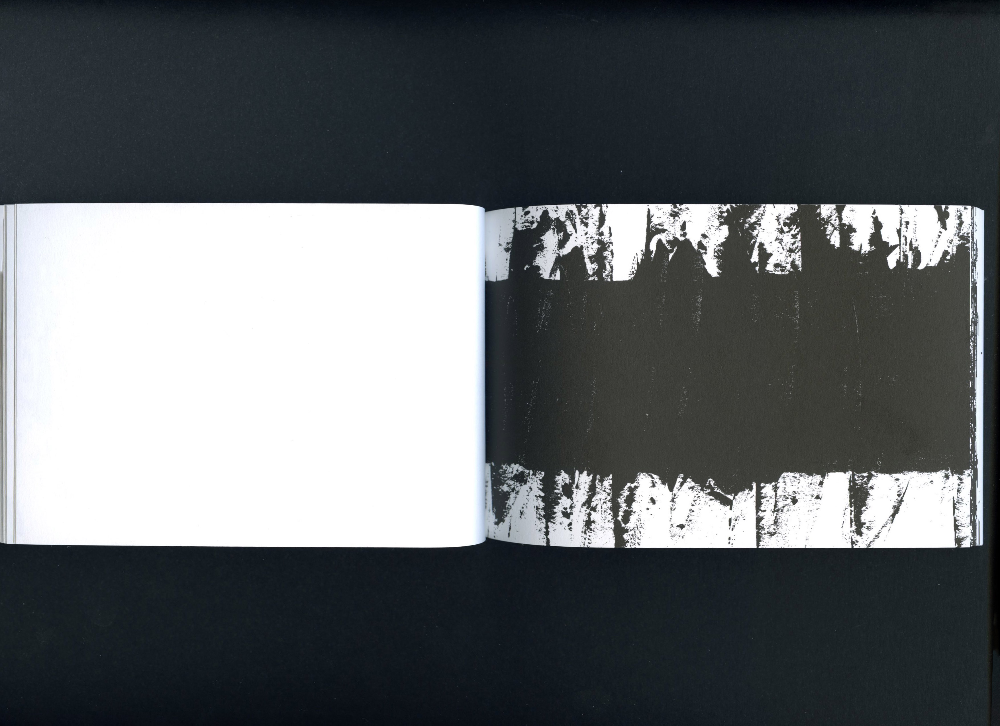
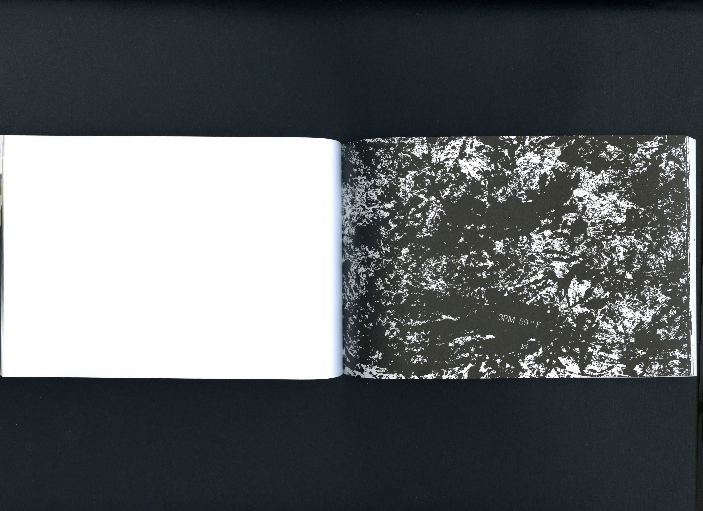
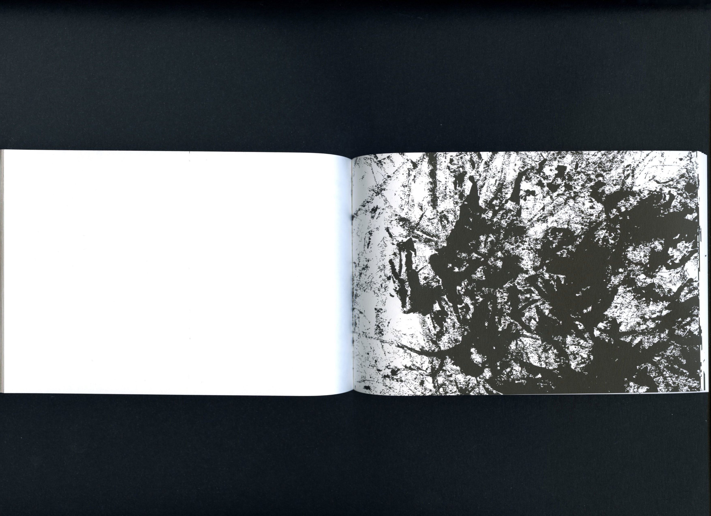
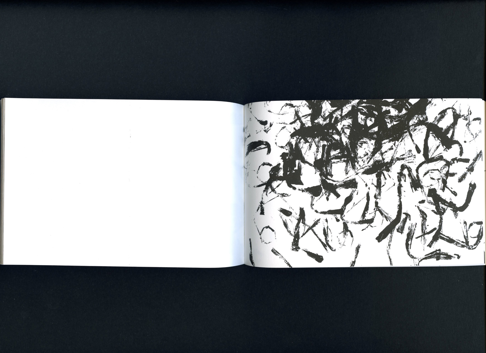
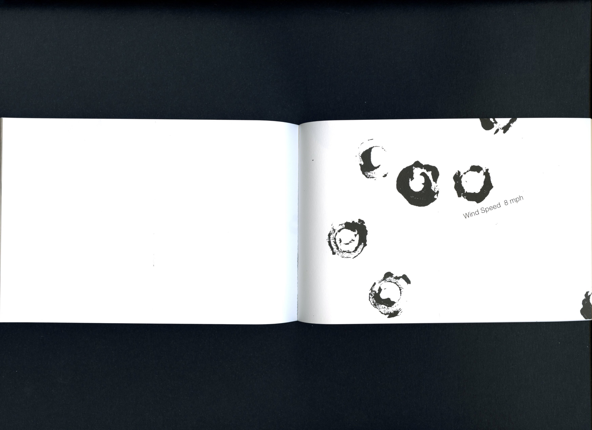
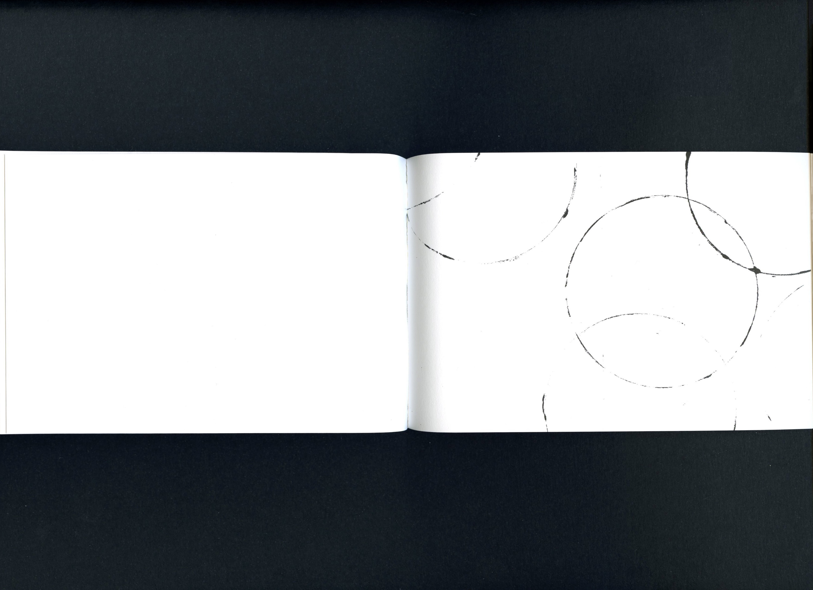